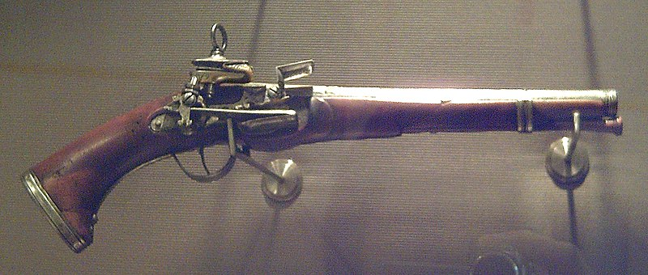
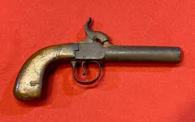
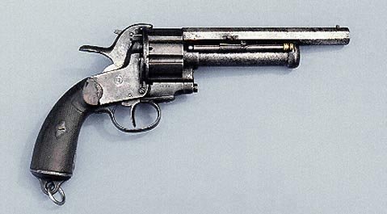
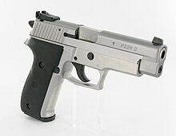
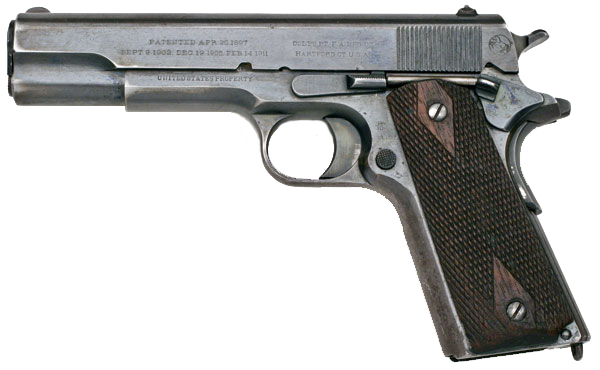

Una pistola es un arma de fuego corta diseñada para ser apuntada y disparada con una sola mano, o con dos, se puede utilizar para la caza dependiendo del arma y dispara balas a corto alcance.
Etimologia
Aunque las primeras pistolas se crearon en el siglo XVII como armas auxiliares de la caballería, el término pistola se refería a los pequeños puñales y dagas que se llevaban escondidos entre la ropa. En la primera mitad del siglo XVI se refieren en lengua castellana las primeras pistolas como arcabuces pequeños. Ya en la segunda mitad de ese siglo se empleaba el término «pistolete». Para primeros del XVII, el término pistola, para referirse a las armas de fuego cortas empuñadas con una mano, ya estaba extendido.
Existen distintas teorías al respecto, pero parece ser que el término proviene del término en inglés pistolet que aparece en 1550, y este posiblemente del término francés por una pequeña arma de fuego o pequeña daga. El término francés pistole aparece por primera vez en 1566, proveniente posiblemente del checo píšťala (‘flauta’ - arma de fuego corta utilizada por los husitas). Otra teoría se refiere a la ciudad italiana de Pistoia, donde se manufacturaban dagas y más tarde conocida por la fabricación de armas de fuego
Pistolas antiguas
La pistola empleaba básicamente los mismos mecanismos de disparo que los mosquetes y fusiles de avancarga: llave de rueda en los siglos XVI y XVII,
llave de pedernal en el XVIII y primera parte del XIX y llave de percusión al aparecer este tipo de mecanismo a principios del XIX.

Todas estas pistolas requerían la recarga de su munición manualmente después de cada disparo. La munición se introducía por la boca del cañón (arma de avancarga) y consistía en pólvora, proyectil y taco de papel (que servía de tapón para mantener comprimidos los dos anteriores dentro del cañón y se presionaba con un adminículo denominado baqueta).
Este método de recarga era muy lento y, generalmente, los combatientes desenfundaban sus sables o espadas después de disparar, ya que las circunstancias no permitían recargar nuevamente la pistola.
Todas estas pistolas requerían la recarga de su munición manualmente después de cada disparo. La munición se introducía por la boca del cañón (arma de avancarga) y consistía en pólvora, proyectil y taco de papel (que servía de tapón para mantener comprimidos los dos anteriores dentro del cañón y se presionaba con un adminículo denominado baqueta).
Este método de recarga era muy lento y, generalmente, los combatientes desenfundaban sus sables o espadas después de disparar, ya que las circunstancias no permitían recargar nuevamente la pistola.

La primera pistola capaz de disparar de manera consecutiva antes de recargar munición fue el revólver, también llamado «pistola rotativa». Se conoce un modelo similar utilizado por el ejército británico en el siglo XIX, pero el revólver moderno lo patentó Samuel Colt en 1835.
Este sistema aloja la munición en un tambor («barrilete») desmontable que gira con el recorrido de vuelta del gatillo, colocando de esta manera una nueva recámara («nicho») ante el percutor.

En la recámara del tambor se introducía una porción de pólvora negra (generalmente DuPont), taco de papel, munición (plomo) y se atacaba con una palanca situada bajo el cañón. Este procedimiento se realizaba con mucho cuidado para evitar que la presión inflamara la pólvora anticipadamente.
Por la parte posterior de cada recámara del tambor se colocaba una cápsula fulminante sobre su respectiva chimenea. En ocasiones se cubría todo con grasa para evitar que la chispa del primer disparo prendiera las seis recámaras, provocando el estallido del arma y heridas al tirador. Debido a lo complejo y lento de esta operación, no era de extrañar que los soldados de caballería llevaran consigo una dotación de tambores precargados, los cuales eran desmontables.

Cuando se extendió el uso de las ametralladoras Maxim, varios fabricantes de armas decidieron adaptar el mecanismo de disparo automático para crear pistolas semiautomáticas. Uno de los primeros prototipos de pistolas semiautomaticas fue la Salvator-Dormus pero no tuvo tanto éxito como otras armas en su época. El primer modelo exitoso fue la Borchardt C-93, creada por el armero alemán Hugo Bochardt y aparecida en 1893.
Era voluminosa, frágil, incómoda y difícil de maniobrar con una mano; se caracterizó por un ingenioso mecanismo de acerrojado parecido a la articulación de la rodilla, que era confiable. Utilizaba el potente cartucho 7,65 x 25 Borchardt. Se fabricaron pocos ejemplares del modelo.

Boletín informativo
Suscríbete a nuestros boletines ahora y mantente al
día con nuevas colecciones y ofertas exclusivas.